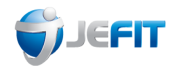

A new and improved way to experience HEALTH!


OVERVIEW
HealthPoint is an all-in-one cloud-based platform that provides health enthusiasts an improved way to collect and store data. As digital health partner, we pride in our creation of a modern and encompassing way to support the user by giving the ability to analyze, connect and organize in the palm your hand.
ROLES
- UX Design
- Visual Design
- Brand Identity
DELIVERABLES
- User Surveys
- User Stories & Flows
- Competitive Analysis
- User Personas
- Content Strategy
- Wireframes
- User Testing
- Visual Design
- High Fidelity Mockups
- Style Guide
TOOLS
- Figma
- Sketch
- Usability Hub
- Draw.io
THE CHALLENGE
There is a rising number of fitness and health apps out in the market that specializes in niche areas within this space. Users often use multiple apps and services for varying health needs, increasing the chance of lost information. They lack in analytics and a simple user interface, when users are now more than ever data driven, and constantly seeking for a solution that’s quick, efficient and effective.
THE SOLUTION
HealthPoint aims to design a simple and intuitive user experience for users to have tools to view aggregated analytics towards their daily, monthly and yearly goals for a variety of data points. The users has the ability to consolidate all their health information and content pulled from different avenues into one convenient location.

DISCOVERY
User Research
After reviewing the stakeholders’ business criteria, I wanted to better understand what are the user’s needs, habits and frustrations of the current fitness and health cloud applications. I continued my research with a creation of a user survey to gather essential information that will aid the direction to a better solution. After a little over 24 hrs of the survey going live, I collected 35 responses.
SURVEY FINDINGS:
-
66%
of respondents, in some shape or form track their health and fitness
-
94%
of respondents want easy and simple navigation and interface as a key
-
83%
of current non-app users are not using an app, due to lack of navigation and complicated UI.
-
77%
want to see their information in a form of analytics.
-
60%
want to integrate third party applications into one central location
-
100%
of users use their phone.
Our targeted audience are between the ages of 18 - 40.
Takeaways
More than half of users track their health and fitness in some sort of manner and majority want to have a simple and easy navigation. Through this survey, I was able to focus on the top 3 features to include in the mobile app. Therefore we need to include:
- Simple and easy UI for easy navigation and usability
- Third party app integrations for one central hub, increasing use of app
- Aggregated Analytics and goals setting to aid users with visuals progression
Competitive Analysis
Next, I conducted a competitive analysis by researching what’s currently out on the market and how a new player entering this space would need to differentiate itself amongst the plethora of health and fitness cloud apps. I wanted to identify what’s currently working and not working between, Google Fit, JEFit and DropBox. All three offer a space to house information but designed differently for their user’s needs and wants.

- Clean and modern UI
- Organization of data points in a form of rings to highlight progress
- Great collaboration tools

- Straightforward and informative onboarding screens
- Obvious CTA buttons
- Integrations with other apps

- Simple add button
- Opens up with other options without disrupting the entire screen
- Analytics to track progress in workout goals
Takeaways
With these findings, I was inspired to incorporate my designs with:
- Google’s minimalistic UI and “rings” that represented collected data points on the mainscreen
- Dropbox’s straightforward onboarding experience with an in-app tutorial and integrations with third part apps
- JEfit’s obvious add button for simple navigation for main features and analytics layout
User Personas
After gather information on our competitors and analyzing the results from our user survey, I interviewed two users to dig a bit deeper into their background, needs and frustrations. Then I was able to mold two different personas that epitomizes the target users for HealthPoint.

ELIZA
- The Social Striver
- 31
- Single
- Director - Product
- San Francisco, CA
- Goals:She is constantly striving for a healthier lifestyle, assessing and analyzing her fitness and progress for marathon training, and likes to organize her goals.
- Frustrations:She uses way too many applications, cannot access apps when offline, and due to the abundance of features cause apps to slow down and become less user-friendly.
“By analyzing my fitness and progress training for marathons, I can make data-driven decisions for my workouts.”

SAM
- The Motivator
- 26
- Single
- IT Specialist
- Phoenix, AZ
- Goals:Wants a healthier lifestyle to increase his self-confidence but needs motivation to start a routine going. He likes to socialize with friends by competition, which keeps him motivated to reach his goals.
- FrustrationsThere’s a high learning curve to complete a simple task, hard to keep track of achievements/goals, not able to track other exercises besides aerobic workouts.
“I just need that motivation to get back into a consistent rhythm of exercise.”
INFORMATION ARCHITECTURE
User Stories
Based on the information gathered from the user survey, competitive analysis and creation of user personas, I created user stories to help determine the tasks and needs of the users and prioritize the stories by the context of the product. After ranking each user story, this created the MVP (Minimum Viable Product).
As a new user I want to create an account with my email and new password so that I can save and protect my files
As a new user I want to create a profile so I can add my personal info and stats
As a new user I want to watch an onboarding tour on how to use the app so I can quickly start using the app
As a new user I want to update my account settings so that I can change my info over time
As a user I want to reset or change my password so I can access my account
As a user I want to integrate all my fitness/health apps so I do not have to opoen multple apps
As a user I want to delete an entry so my data is accurate
As a user I want to create a checklist of goals so I can see the progress I am making to achieve these goals
ALL HIGH PRIORITY STORIES
To create a well-rounded MVP, I converted all high, with some medium and low user stories into user flows to visually break down, how the user would interact with the product and complete certain tasks.
BRANDING & IDENTITY
Switching gears from the design of the project's interface and onto the design of the project's branding and identity. I was ready to generate and craft the aesthetics of the product, while keeping in mind of the users from my research.
HealthPoint was chosen as the brand name because it provides a direction for users to a specific location that they can trust and feel confident. The logo symbolizes how health can be found anywhere in the world.
Logo Design


HealthPoint Logo on dark background

HealthPoint Logo on light background
Color Palette

The color palette comprises of colors pulled from what mother nature has to offer, from the outdoors to what we eat like fruits and vegetables. The primary colors are mostly cool that’s nicely paired with the color cinnabar and lemon to balance the brightness.
Typography
BRAND
Aa
ARCHIVO BLACK, REGULAR
Archivo Black is a grotesque sans serif typeface, designed with technical and bold characteristics.
COMPLEMENTARY
Aa
OPEN SANS, REGULAR
Open Sans is a humanist sans serif typeface, designed with an upright stress, open forms and a neutral, yet friendly appearance.
Archivo Black and the complementary typography is Open Sans. This pair of typography is offers a nice balancing act, which takes the boldness of Archivo Black next to the simplicity of Open Sans. Both are easy to read and compliment each other well.
WIREFRAMES & TESTING
Using my user stories, flows and sitemap, it provided the building blocks to create the initial sketches of my wireframes to low fidelity wireframes into Figma.


Activity Dashboard

Sign Up Homepage

Dashboard
Usability Testing: Round 1
For the first round of testing, I wanted to test users to validate my design decisions, by asking users to perform a few tasks.
Task #1: Sign up and go through the onboarding process. I wanted to test how the user interacted with the design and if the onboarding experience was smooth.
Task #2: Manually add an exercise. I wanted to find out if the add button was obvious and the process was simple and quick, thinking back to the problem.
Task #3: Organize the dashboard. I wanted to test if it was intuitive to organize data into folders without clear instructions.
Below is an example of the a design update based on the feedback I received for the first round of testing:

LoFi of Dashboard navigation bar non-distinctive and lack of breathing room between add button

HiFi of Dashboard navigation bar has distinctive icons and more space between add button
Takeaways
In the lo-fi mockup, users were unsure which screen they were on when asked to go back to the main dashboard. Also, users mentioned the add button was too close to the navbar. Keeping that in mind, when crafting the first iteration of the high fidelity mockup, I made the following updated:
- Softening and opaquing the other icons
- Cleaning up and slightly moving the add button higher for more breathing room
Preference Testing
After gathering some early feedback from the user testing on the wireframes. I began building off my wireframes and weaving in the brand and visual design. There were some design decisions that highlighted different components of the identity of the brand, therefore, several A/B testing was conducted.
As example below is which hero image the user preferred on the marketing landing page:
Which hero image do you prefer and why?

23% users preferred this hero image

77% users preferred this hero image because of its clarity, composition and activity.
Usability Testing: Round 2
I conducted three usability tests in-person for the second round to ensure the color choices and design elements reinforced the brand identity and the overall cohesion of the visual design and usability of the product. Using the feedback, I identified any common patterns and with those patterns, I applied those design changes as a continued iteration for a better user experience.
Below are some iterations from the usability testing:
First Hi-Fi mockup of the activity dashboard
Final mockup of Activity Dashboard
Takeaways
Visually, all users thought the graph on the left looked great but had a very difficult time understanding what kind of information the graph was trying to provide. Thus, I made multiple design changes to the graph:
- A small marker indicating the date
- Subtle horizontal lines for better readability
- Rings that represented the percentage of completion for each categories goals
FINAL PROTOTYPE
Dashboard
The dashboard is laid out simple and intuitively for users to easily navigate for any of their specific need. With the navbar and add button strategically placed for high visability and access.
Analytics
Users can easily understand and analyze their data and progress. With clear space to differieniate the progression graph and colors to distinguish each data measurement.
Goals Checklist
Quick and simple way to add goals to keep accountable and on track. Users can easily add any goal with categorization, setting reminders with a toggle and text field for notes.
REFLECTIONS
HealthPoint has joined a very competitive and growing space, and will need to continue with iterating and adjusting to the constant changes of user’s needs. I was very unsure how to differentiate ourselves from the rest of the apps but to my surprise, starting at the user survey results, not many apps do very well in all areas.
Lessons Learned
Creating the HealthPoint app, taught me how usability testing and preference testing is essential to ensure certain design element or process can translate well with others. Being so close to the project for a few weeks can create tunnel vision. I learned that I need to let go a certain design element, such as a hero image, thinking it portrays the brand, but the preference testing proved otherwise. Learn to let it go and reiterate.
This project also made me realize how much time I spend on creating wireframes and the high fidelity mockups. I think I spent too much being indecisive starting at the wireframes and knowing visual design is somewhere I lack, took quite some time to figure out how to utilize the color scheme and incorporate design elements. Going forward, I need to learn to quickly draft wireframes and make decisions, and understand making changes will happen during the design process.
Conclusion
By working through this project with a design thinking mindset, I was able to create a product that was driven by data and results, with empathizing and focusing on the user. Ultimately, our goal was to create an app that the user can utilize to improve their physical, mental and overall well-being.
BACK TO TOP